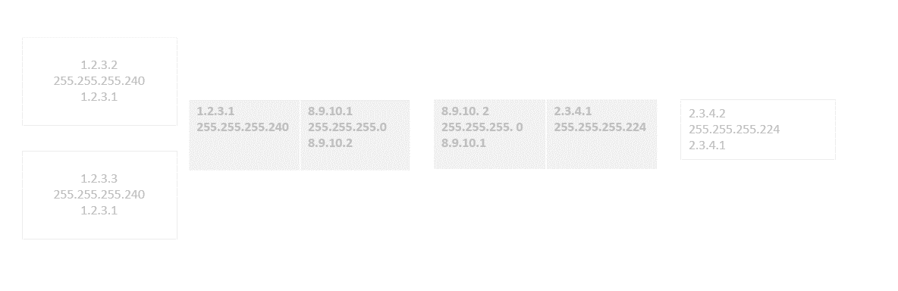

1. Чтобы настроить между несколькими виртуалками сеть нужно:
Запустить одну виртуальную машину и влевом верхнем углу нажать «Устройства» затем выбрать «Подключить образ диска Дополнений гостевой ОС», если выдаст ошибку, то нужно выполнить следующее, а именно закрыть виртуалку и в ВиртуалБокс зайти в настройки виртуальной машины → Носители → → Выбрать → VBoxGuestAdditions.iso → Выбрать. После чего сохранить настройки и запустить виртуальную машину.
ВЫПОЛНИТЬ ДЛЯ ВСЕХ ВИРТУАЛЬНЫХ МАШИНЫ ВЫШЕ СКАЗАНЫЕ ДЕЙСТВИЯ
2. В виртуал боксе нажать сочитание клавиш «Сtrl+h». В появившемся окне в окне «Виртуальные сети хоста» нажать «Создать»
После создания можно настроить Ipv4 адрес и маску сети вручную по заданию.
Данный виртуальный хост нужен для создания локальной сети между виртуальными ОС.
3. Для того, чтобы был интернет на каждой виртуальной машине и сервере, нужно перейти во вкладку «Сети NAT» и нажать «Создать»
4.После зайти в настройки каждой виртуальной машины и выполнить следующее, а именно зайти во вкладку «Сеть», Адаптер1 должен быть выбран «Сеть Nat» и имя должно быть «NatNetwork»
Адаптер 2 нужно включить и выбрать «Виртуальный адаптер хоста»
Выполнить все действия начиная с пункта 4.
После проделанных действий запустить виртуалки И сделать следующее:
При появлении в правом углу «Хотите ли вы разрешить обнаруживать ваш пк» нажать «ДА»
После на каждой зайти в «Центр управления сетями и общим доступом» для «Сеть2» должны стоять автоматические настройки в ином случае интернета на виртуальной ОС не будет.
Если интернет не работает на сервере то нужно прописать днс сервера : 8.8.8.8
8.8.4.4
И перезагрузить сервер.
